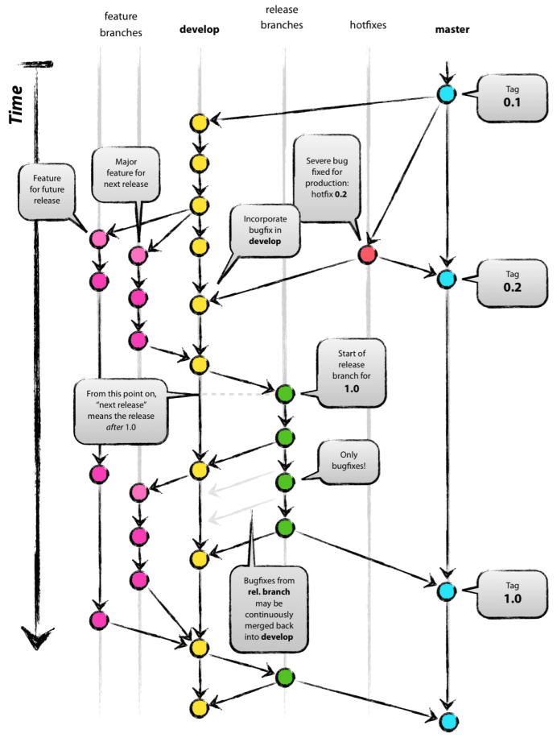

Git是一个开源的分布式版本控制系统，可以有效、高速的处理从很小到非常大的项目版本管理。Git 是 Linus Torvalds 为了帮助管理 Linux 内核开发而开发的一个开放源码的版本控制软件。
Linus Torvalds是著名的电脑程序员、黑客。他被当作开源世界里的神。Linux内核的发明人及该计划的合作者。1969年12月28日出生于芬兰赫尔辛基市。父亲Nils Torvalds是一名活跃的共产主义者及电台记者。Linus 1991年就读于赫尔辛基大学计算机系，1997年至2003年在美国加州硅谷任职于全美达公司，现受聘于开放源代码开发实验，全力开发Linux内核。
Linux系统的产生充满了偶然性，Linus经常要用他的终端仿真器去访问大学主机上的新闻组和邮件，为了方便读写和下载文件，他自己编写了磁盘驱动程序和文件系统，这些在后来成为了Linux第一个内核的雏形。
终端仿真器是什么呢？早期的计算机使用方式都是一台主机和许多字符方式的终端一起工作，现在的PC机也可以模仿各种终端，并可以通过调制解调器连接到其它的计算机上。模仿终端的计算机软件叫做终端仿真。功能单一的终端设备在上世纪70年代和80年代比较盛行。人们在其上编制程序、运行程序、编写文档或发出打印命令等。终端使用一根电缆与主机相连。
调制解调器又是什么呢，就是将普通的计算机数字信号翻译成可沿普通电话线传送的模拟信号。
现在一般使用的都是集中化版本控制器，都有一个单一的集中管理的服务器，保存所有文件的修订版本，而协同工作的人们都通过客户端连到这台服务器，取出最新的文件或者提交更新。管理员可以轻松的对权限等进行管理，但缺点也是显而易见的，只要服务器挂掉大家就别无法协同工作了。或者服务器出现故障坏掉了，数据丢失，那基本上就是灾难性事故。
相对于集中式版本控制器，另一种就是分布式管理控制器。对非线性开发模式的强力支持（允许上千个并行开发的分支） * 完全分布式 * 有能力高效管理类似 Linux 内核一样的超大规模项目（速度和数据量）。
Git和Svn等其他集中式版本控制器有以下区别：第一、svn的每次提交会比较前后的内容的具体差异，每次记录有哪些文件做了更新，更新了什么。而Git不比较差异，直接记录前后数据的快照，建立一个索引来指向这些快照。绝大多数操作都只需要访问本地文件和资源，不用连网。
Git的三种状态，已提交（committed），已修改（modified）和已暂存（staged）。
从一般开发者的角度来看，git有以下功能：
1、从服务器上克隆完整的Git仓库（包括代码和版本信息）到单机上。
2、在自己的机器上根据不同的开发目的，创建分支，修改代码。
3、在单机上自己创建的分支上提交代码。
4、在单机上合并分支。
5、把服务器上最新版的代码fetch下来，然后跟自己的主分支合并。
6、生成补丁（patch），把补丁发送给主开发者。
7、看主开发者的反馈，如果主开发者发现两个一般开发者之间有冲突（他们之间可以合作解决的冲突），就会要求他们先解决冲突，然后再由其中一个人提交。如果主开发者可以自己解决，或者没有冲突，就通过。
8、一般开发者之间解决冲突的方法，开发者之间可以使用pull 命令解决冲突，解决完冲突之后再向主开发者提交补丁。
从主开发者的角度（假设主开发者不用开发代码）看，git有以下功能：
1、查看邮件或者通过其它方式查看一般开发者的提交状态。
2、打上补丁，解决冲突（可以自己解决，也可以要求开发者之间解决以后再重新提交，如果是开源项目，还要决定哪些补丁有用，哪些不用）。
3、向公共服务器提交结果，然后通知所有开发人员。
安装好git后需要配置工作环境。
1 2 | $ git config --global user.name "John Doe" $ git config --global user.email johndoe@ example.com |
设置差异性比较
$ git config --global merge.tool vimdiff |
要检查已有的配置信息，可以使用 git config --list 命令
git init 初始化仓库
Git clone 拉取代码
Git status查看当前状态 git status -s 简化显示
Git log 查看提交日志 git log --oneline 每个提交按一行显示
Git add 提交代码到暂存区
Git commit -m “this is message” 代码提交
Git commit -a -m “....”直接提交
Git reset <file> 撤销当前提交
Git reset HEAD^ 本次状态里回退到上个修改
Git reset --hard <head> 回退到某个状态
Git rm -r --cache . 移除所有版本跟踪文件
Git branch feature 创建feature分支
Git checkout feature 切换到feature分支
Git checkout -b feature 创建并切换到feature分支
Git rebase master 更新分支代码
Git rebase feature 在master主分支更新合并feature代码
Git branch -d feature 删除分支
Git branch -v 查看各分支最后一次提交
git merge --no-ff feature 合并分支
Git fetch origin 更新远程库到本地
Git push origin feature 推送分支
Git merge origin/feature 取远程分支合并到本地
Git checkout -b feature origin/feature 取远程分支创建并切换到本地分支
删除远程分支git push origin :feature
要忽略某些不想被加入版本跟踪的文件，则生成.gitignore文件，在文件中添加忽略文件即可。如果开始并没有生成此文件，则需要先执行git rm -r --cache . 然后git add . 和git commit -m “...”
Ps:系统出现如下错误：warning: LF will be replaced by CRLF
解决方法：git config --global core.autocrlf false

从上图可以看到主要包含下面几个分支：
· master: 主分支，主要用来版本发布。
· develop：日常开发分支，该分支正常保存了开发的最新代码。
· feature：具体的功能开发分支，只与 develop 分支交互。
· release：release 分支可以认为是 master 分支的未测试版。比如说某一期的功能全部开发完成，那么就将 develop 分支合并到 release 分支，测试没有问题并且到了发布日期就合并到 master 分支，进行发布。
· hotfix：线上 bug 修复分支。
四、创建git仓库
Git init --bare
Git init